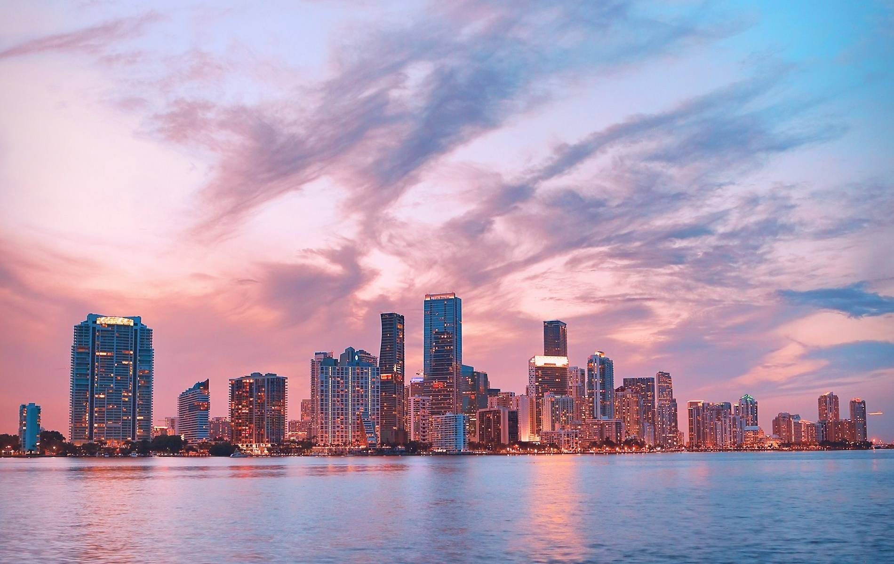
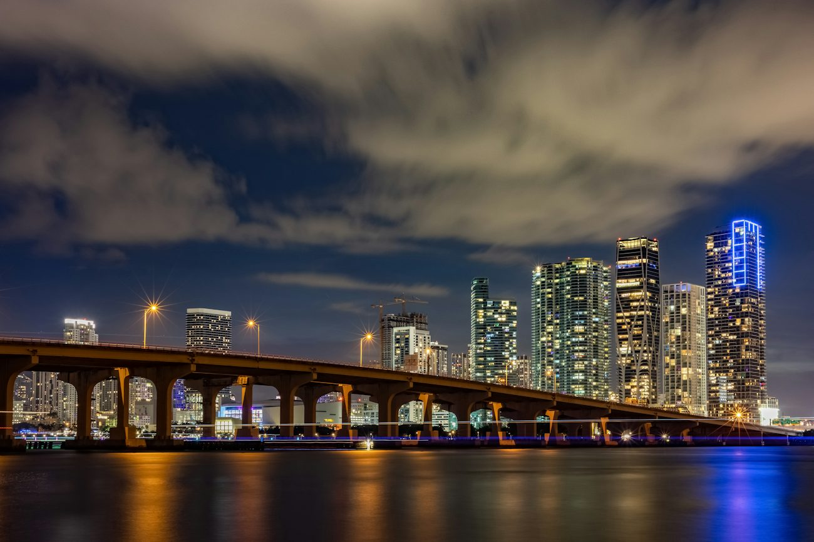

JournalGuidesUpdated 2026-10-30
The Leonida Tours blog
Everything we know about seeing South Florida properly, written by the people who run the tours: where to go, what it really costs, when to visit and how to get the most out of a short trip.
Everything we know about seeing South Florida properly, written by the people who run the tours: where to go, what it really costs, when to visit and how to get the most out of a short trip.
The date is locked: November 19, 2026, on PlayStation 5 and Xbox Series X|S. Here is the confirmed timeline, what changed twice on the way, and the smartest way to spend launch week if you are already in South Florida.
Read the guide
The date is locked: November 19, 2026, on PlayStation 5 and Xbox Series X|S. Here is the confirmed timeline, what changed twice on the way, and the smartest way to spend launch week if you are already in South Florida.
2026-10-20 · 4 min read
Twenty-four places, from the Ocean View Hotel to the Everglades airboat, each matched to a real address with coordinates and a confidence rating. This is the list to take with you.
2026-10-19 · 6 min read
Partly. Vice City is Miami, but Leonida is a whole invented state, and the differences matter for anyone planning a trip or writing about the game.
2026-10-18 · 4 min read
Six official regions, one fictional state, and a surprising amount of real Florida underneath. Here is the official copy for each region next to the geography it borrows from.
2026-10-17 · 5 min read
Four official videos, and every one of them contains at least one frame you can stand in. Here is where each real location appears, to the second.
2026-10-16 · 4 min read
There is no serious alternative: the game's wetland region is the Everglades. Here is the official copy, the geography, and what the airboat ride is actually like.
2026-10-15 · 4 min read
The game's southern archipelago is the Florida Keys, down to the Seven Mile Bridge and the bar where the boat owners keep their slips. Here is the real route, and how long it really takes.
2026-10-14 · 6 min read
One day, no filler. The order matters: the beach at 7am, the murals at 11, the water at sunset and the neon after 8. Here is the timing that makes it work.
2026-10-13 · 6 min read
The boat leaves at 6:30pm for a reason. Here is the route, where the light actually hits the skyline, and what to bring so you are not cold on the water.
2026-10-12 · 4 min read
Four hours door to door, thirty minutes on the water, and a completely different landscape from anything else in Florida. Here is the practical version before you book.
2026-10-11 · 4 min read
Three days, organised so that no day has more than one big anchor. The bay and the strip on day one, the murals and the Cuban food on day two, the wild part on day three.
2026-10-10 · 5 min read
One week in the most popular city in America. What actually changes, which days are worth booking, and the three things that sell out first.
2026-09-30 · 5 min readTell us your date and group size and we will confirm your spot before public booking opens, plus 20% off your first tour.
Reserve Now